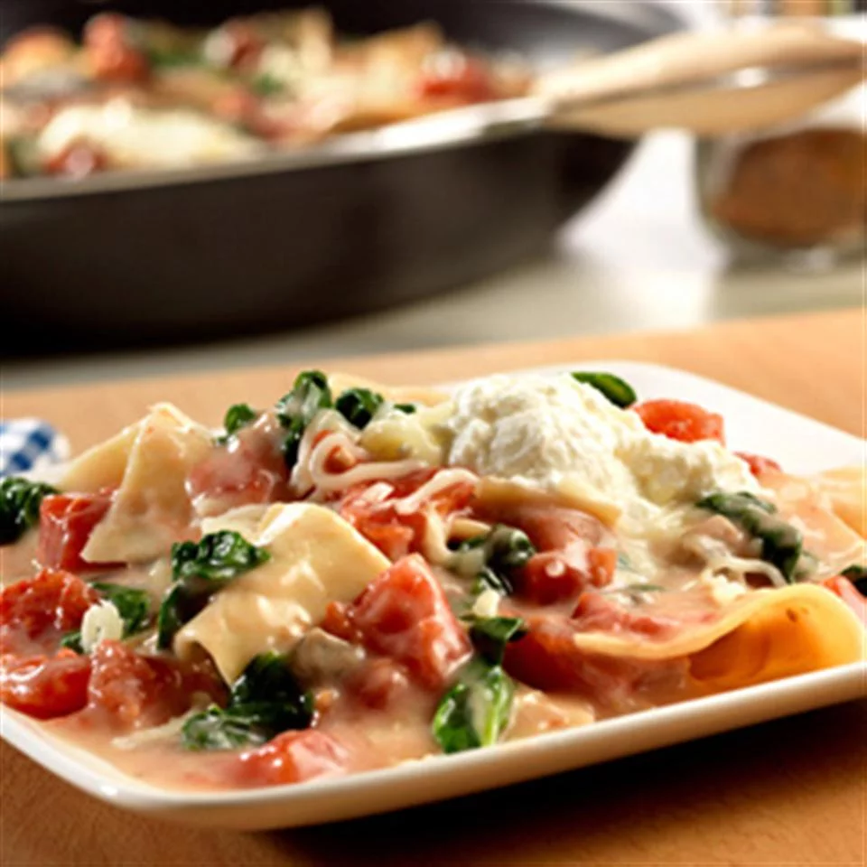

Lasagna

Description
Lasagna usually takes hours to make, but this scrumptious vegetable lasagna is made in the skillet in less than 30 minutes.
Ingredients:
- 2 ¾ cups Swanson® Vegetable Broth (Regular or Certified Organic)
- 15 uncooked oven-ready (no boil) lasagna noodles
- 1 (10.5 ounce) can Campbell's® Condensed Cream of Mushroom Soup or Campbell's® Condensed 98% Fat Free Cream of Mushroom Soup
- 1 (14.5 ounce) can diced tomatoes, undrained
- 1 (10 ounce) package frozen spinach, thawed and well drained
- 1 cup ricotta cheese
- 1 cup shredded mozzarella cheese
Steps:
- Heat the broth in a 12-inch skillet over medium-high heat to a boil. Break the noodles into pieces and add to the broth. Reduce the heat to low. Cook for 3 minutes or until the noodles are tender.
- Stir the soup, tomatoes and spinach in the skillet. Cook for 5 minutes or until the mixture is hot and bubbling.
- Remove the skillet from the heat. Spoon the ricotta cheese on top and sprinkle with the mozzarella cheese.